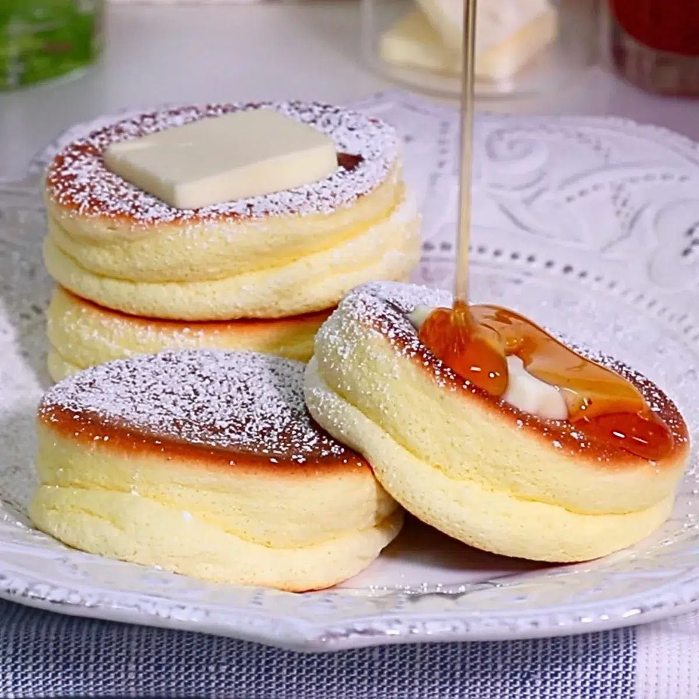

Home
Japanese Soufflé Pancakes

Description
The western world, once again, finds itself facinated with a new HOT food dish.
This go around it's focused on Fluffy Japanese Soufflé Pancakes. From tiktoks to daytiem television, this dish
is everywhere and for good reason. One look and you are simply mesmerized, and find yourself thinking "IT"S SO FLUFFY".
Originally, Fluffy Japanese soufflé pancakes were not created in Japan. They were invented in Hawaii by Nathan Tran, owner of Cream Pot in Waikiki, who
wanted to satisfy Japanese toruists with a combination of traditional Aerican breakfast and French soufflés.
These pancakes are tall, "cottony stacks" with a tase that leaves you thinking: "This is what clouds must taste like,".
The special secret to the recipe is in the stiff-peaked meringue folded in to the batter, which is then cooked low and slow with steam. Without further ado,
let's dig in to this tasty new treat that could just be your next breakfast!
Ingredients
- 2 Large eggs
- ¼ cup cake flour
- 1 ½ Tbsp whole milk
- 2 Tbsp sugar
- ¼ tsp vanilla extract
- ½ tsp baking powder
- 1 Tbsp neutral oil (for the pan)
- 2 Tbsp water (for steaming)
Optional: For Toppings
- 1 Tbsp confectioners' sugar
- maple syrup
- ½ cup heavy cream (for whipped cream, optional)
- 1½ Tbsp sugar
- fresh strawberries and blueberries
Steps
- Mix the batter. Separate the eggs, freeze the whites for 15 minutes, then whisk the yolks with milk and vanilla until frothy.
Sift in the flour and baking powder and fold by hand until just combined.
- Whip egg whites into meringue. Beat the half-frozen whites with sugar until stiff peaks form.
Preheat a nonstick pan to 300°F (150°C) on the lowest stove setting and grease lightly.
- Fold the meringue into the batter. Incorporate in three additions,
folding gently with a hand whisk to keep the air bubbles intact.
- Stack and steam. Scoop the batter with a cookie scoop into tall mounds.
After 2 minutes, add a splash of water, cover, and cook 6–7 minutes. Add a final scoop to each mound.
- Flip and finish. Roll each pancake over gently with an offset spatula. Add another splash of water, cover,
and cook 4–5 minutes until golden. Serve immediately.
Optional: For Whip Cream
- Fill a large bowl halfway with ice cubes and water.
Nest a clean, dry medium bowl on top and add ½ cup heavy (whipping) cream and 1½ Tbsp sugar.
- Whisk on high speed to medium-firm peaks: The cream mounds and holds its shape, with tips that curl rather than flop.
Chill it in the fridge until ready to serve.